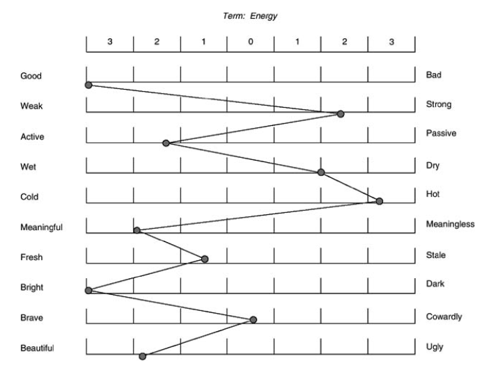
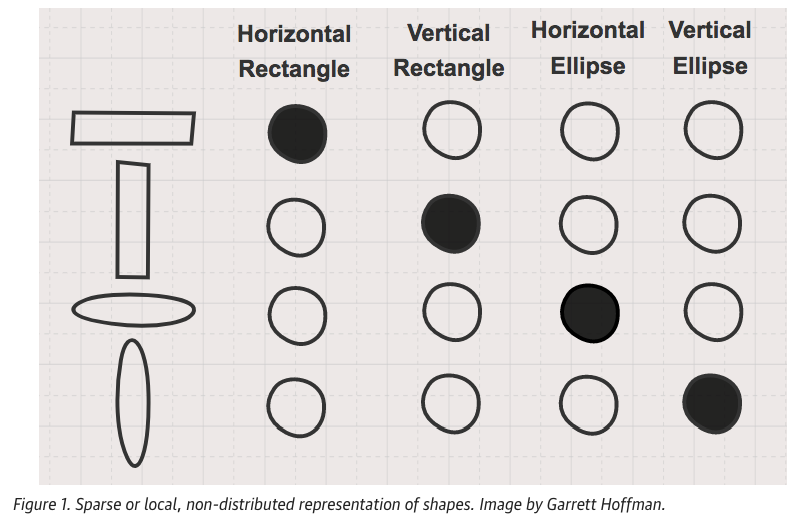
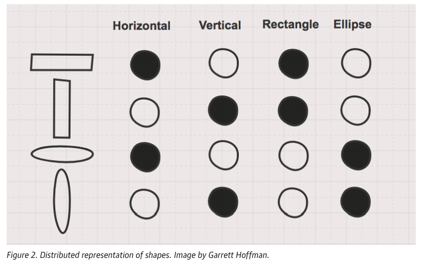
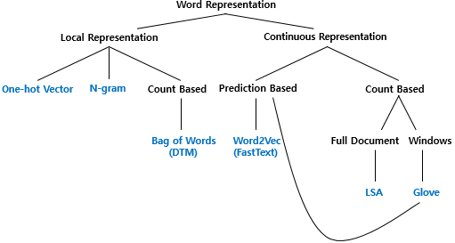
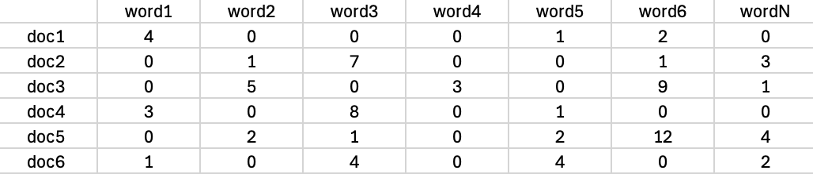
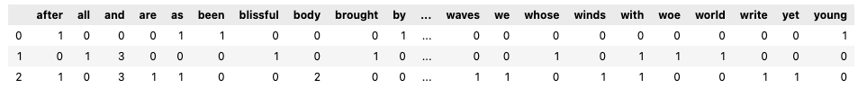
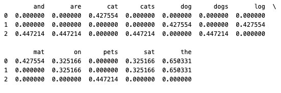

11 Text Representation Based on Counts
11.0.1 What is a vector?
A vector is explained in relation to scalars, matrices, and tensors. These concepts are important for understanding various mathematical and physical quantities.
- A scalar is a real number that represents the magnitude (e.g., size or weight) of an object.
- A vector has both direction and magnitude. It is composed of multiple scalar values.
- A matrix is a 2-dimensional array of numbers, which is essentially a collection of vectors organized in rows and columns.
- A tensor is a higher-dimensional generalization of matrices, consisting of numbers arranged in more than two dimensions.
Vectors and these structures are also applied in natural language processing to represent characteristics of words, phrases, and sentences.
11.0.2 Examples:
Scalar: A single number like
1Vector: A list of numbers like \(\begin{bmatrix} 1 \\ 2 \end{bmatrix}\)
Matrix: A 2x2 array like \(\begin{bmatrix} 1 & 2 \\ 3 & 4 \end{bmatrix}\)
Tensor: A 3-dimensional array like \(\begin{bmatrix} \begin{bmatrix} 1 & 2 \\ 3 & 4 \end{bmatrix} \\ \begin{bmatrix} 5 & 6 \\ 7 & 8 \end{bmatrix} \end{bmatrix}\)
11.0.3 Embedding: How do machines understand natural language?
To understand how machines process human language, it is essential to grasp the concept of embedding. Computers fundamentally process data by switching electric signals on and off, meaning they work with binary states (on and off). Therefore, any form of input data must be converted into numbers for the computer to process it. Consequently, for a computer to understand natural language, the process of converting language into numerical data must happen first.
This is similar to how students learn a foreign language—by associating new words with their meaning in their native language through various methods such as context or dictionary lookups. However, for computers to understand human language, they must convert language elements like words and sentences into numbers, which correspond to the processing units. These units (words, sentences, etc.) are represented as vectors of numbers.
In other words, to enable computers to understand natural language, human language must be transformed into the computer’s language—numbers. The process of converting language into numbers for machine processing is known as embedding. When words are converted into vectors, it is called word embedding, and when sentences are converted into vectors, it is called sentence embedding.
11.0.4 History of the Embedding Concept
The idea of embedding originates from the concept of capturing the meaning of language units (words, sentences, etc.) based only on contextual information. This concept can be traced back to the structuralist linguists of the 1950s, including Zellig Harris, John Firth, and others. In the 1960s, Charles Osgood introduced the semantic differential method, which showed an early model of embedding by expressing psychological meanings of words in three-dimensional semantic space.

(Source:Lavrakas (2008). Encyclopedia of survey research methods. Sage.)
For example, as shown in the figure, the word “energy” is represented in 10 dimensions, with each axis representing different semantic traits. This method of representing words in multi-dimensional space laid the foundation for embedding.
In the 1990s, automatic methods were developed to extract features from text, using models like Latent Semantic Analysis (LSA) and Latent Dirichlet Allocation (LDA). These were some of the key approaches to embedding that relied on statistical techniques.
11.0.5 The Neural Network Era
In 2003, Yoshua Bengio and other researchers introduced the neural probabilistic language model, marking the beginning of the use of neural networks in NLP. Since then, neural network-based embeddings have been widely used. Neural models are based on predicting which word is likely to come next by learning embeddings during the prediction process.
For instance, dense embeddings are used in deep learning-based natural language processing to convert input data into vector representations. This form of embedding is now common in deep learning frameworks.
The content in the image discusses different methods for representing vectors, particularly focusing on sparse representation and distributed representation. Below is the English translation and summary:
11.1 Embedding Representation Methods
To understand embedding, it is necessary first to understand how vectors are represented and generated. Vector representation can broadly be classified into sparse representation and distributed representation.

To illustrate the concepts of sparse and distributed representations, we can use a simple shape example. In the above Figure, four shapes and their names are shown. The target shape’s name is represented in black, and the other shapes’ names are left blank. In this method, the number of shapes corresponds to the number of features (i.e., dimensions), and each feature is independent.
In sparse representation, features are encoded using 1s and 0s. The black mark is represented as 1, and the white marks as 0s. Most of the values are 0, with only the corresponding feature being marked as 1. This method is called sparse representation because only a few features are active (non-zero).
In the figure, the first shape is a horizontally long rectangle, and the second shape is a vertically long rectangle. These two shapes share no similarities in sparse representation. Each shape is represented independently, with no overlap in features.
In contrast, distributed representation captures the similarity between shapes. In the following Figure, both the long horizontal and long vertical rectangles share a common feature, i.e., the fact that they are rectangles, but they differ in their specific directions (horizontal or vertical). This allows for more compact and meaningful vector representations by capturing shared properties between different objects.

For instance, the first and second shapes share the property of being rectangles, while the third and fourth shapes share the property of being towers. In distributed representation, the shapes are described based on their common characteristics, rather than independent one-hot features as in sparse representation.

11.1.1 Local Representation:
- One-hot Vector: A simple count-based method where each word is represented by a vector where only one position is marked as 1 (the word’s position in the vocabulary), while all other positions are 0.
- N-gram: A technique that considers sequences of words (or characters) of length N to capture local context in text.
11.1.2 Continuous Representation:
This is more advanced than local representation and is generally better at capturing the semantic relationships between words.
- Count-Based Methods:
- Bag of Words (DTM): A representation that counts word occurrences in documents without considering word order. This includes methods like document-term matrices (DTM).
- LSA (Latent Semantic Analysis): A method based on singular value decomposition of the document-term matrix, often used for capturing the global meaning of words across full documents.
- GloVe (Global Vectors for Word Representation): A word representation that combines the benefits of global matrix factorization and local context window methods.
- Prediction-Based Methods:
- Word2Vec (FastText): A continuous bag-of-words (CBOW) and skip-gram model that predicts either a word from its surrounding context or the context from a given word. FastText is an extension of Word2Vec that also considers subword information.
11.1.3 Sparse Representation: One-Hot Encoding
One of the simplest forms of embedding is one-hot encoding, a type of sparse representation. In this method, each element (such as a word) in a collection (e.g., sentence, document) is represented as a vector where the target element is assigned a value of 1, and all other elements are assigned a value of 0.
For example, if we have the sentence “all is well” with the words “all,” “is,” and “well,” the one-hot encoding representation for these words would be:
| Word | all | is | well |
|---|---|---|---|
| all | 1 | 0 | 0 |
| is | 0 | 1 | 0 |
| well | 0 | 0 | 1 |
[Figure] One-Hot Encoding Method of Embedding
This table represents the one-hot encoding embedding of the words “all,” “is,” and “well,” where each word is assigned a unique vector. Only the position corresponding to the word has a value of 1, and all other positions are 0.
11.1.3.1 Advantages:
- It is easy to understand which words are being used, as the representation is simple.
11.1.3.2 Disadvantages:
- As the number of words increases, the size of the vector grows, leading to high memory usage.
- One-hot encoding does not capture any semantic similarity between words; for example, “king” and “queen” would be completely different.
The document-term matrix (DTM) is an extension of one-hot encoding at the document level. The image also mentions the term frequency-inverse document frequency (TF-IDF), which is another approach that assigns importance to words based on how often they appear across multiple documents.
11.1.4 Distributed Representation
The second major embedding type described is distributed representation, where words are represented as vectors with real-numbered values. Unlike one-hot encoding, distributed representation captures semantic relationships between words. For example, the word “all” could be represented by a vector like [-0.0031, -0.0421, 0.0125, 0.0062].
Here is the translation of the table from the image to English:
| Word | Dimension 1 | Dimension 2 | Dimension 3 | Dimension 4 |
|---|---|---|---|---|
| all | -0.0031 | -0.0421 | 0.0125 | 0.0062 |
| is | 0.0212 | 0.0125 | -0.0089 | 0.0376 |
| well | -0.0543 | 0.0684 | -0.0023 | 0.0181 |
[Figure] Distributed Representation Method of Embedding
This table shows an example of distributed embeddings for the words “all,” “is,” and “well,” where each word is represented as a vector in a 4-dimensional space. Each dimension has a real number value, capturing more information about the relationships between words compared to one-hot encoding.
11.1.4.1 Advantages:
- Distributed representations can capture the semantic meaning of words.
- The dimensionality of vectors does not increase as more words are added.
This method is widely used in natural language processing today because it can efficiently capture word meanings and relationships. Techniques like Word2Vec calculate these word embeddings. Two popular models for Word2Vec are CBOW (Continuous Bag of Words Model) and Skip-Gram (see Chapter 12. Word Embedding and Similarity)
11.2 Examples of Text Representation Methods
11.2.1 Document-Term Matrix (DTM)
11.2.2 Concept of Document-Term Matrix
A Document-Term Matrix (DTM) is a matrix that represents the frequency of terms occurring in a set of documents. This matrix is widely used in natural language processing (NLP) for tasks such as text mining, information retrieval, and topic modeling.
import pandas as pd
# Example Document-Term Matrix (DTM) data
data = {
'word1': [4, 0, 0, 3, 0, 1],
'word2': [0, 1, 5, 0, 2, 0],
'word3': [0, 7, 0, 8, 1, 4],
'word4': [0, 0, 3, 0, 0, 0],
'word5': [1, 0, 0, 1, 2, 4],
'word6': [2, 1, 9, 0, 12, 0],
'wordN': [0, 3, 1, 0, 4, 2],
}
# Creating the Document-Term Matrix DataFrame
dtm_df = pd.DataFrame(data, index=[f'doc{i+1}' for i in range(6)])
dtm_df
11.2.3 Understanding the Components:
- Rows (doc1, doc, … ,doc6): Each row represents a document in the corpus.
- Columns (word1, word2, … , wordN): Each column represents a unique word (term) in the corpus.
- Values: The numbers in the matrix represent the frequency of each term in the corresponding document. For instance, in document ( doc1 ), term ( word1 ) appears 4 times, while term ( word1 ) appears once.
Here is an example of how to create a Document-Term Matrix using Python.
# Import necessary libraries
from sklearn.feature_extraction.text import CountVectorizer
import pandas as pd
# Define sample documents
documents = [
"Sir Walter has resented it. As the head of the house, he felt that he ought to have been consulted, especially after taking the young man so publicly by the hand",
"Of Man's first disobedience, and the fruit Of that forbidden tree whose mortal taste Brought death into the World, and all our woe, With loss of Eden, till one greater Man Restore us, and regain the blissful seat, ",
"Come, said my soul, Such verses for my Body let us write, (for we are one,) That should I after return, Or, long, long hence, in other spheres, There to some group of mates the chants resuming, (Tallying Earth's soil, trees, winds, tumultuous waves,) Ever with pleas'd smile I may keep on, Ever and ever yet the verses owning--as, first, I here and now Signing for Soul and Body, set to them my name,"
]
# Initialize CountVectorizer to count word frequencies
vectorizer = CountVectorizer()
# Fit and transform the documents to generate a word count vector
X = vectorizer.fit_transform(documents)
# Get the list of words
words = vectorizer.get_feature_names_out()
# Convert the result to a DataFrame for better visualization
df_bow = pd.DataFrame(X.toarray(), columns=words)
# Display the result
df_bowThis code creates a Document-Term Matrix from three sample documents. The matrix counts the occurrences of each word in the documents and presents it in the following format:

This structure allows for further analysis such as identifying important words in a document or across documents, performing clustering, or calculating term importance metrics like TF-IDF (Term Frequency-Inverse Document Frequency).
11.3 TF-IDF (Term Frequency-Inverse Document Frequency)
11.3.1 Concept of TF-IDF
TF-IDF is a method used to evaluate the importance of a word in a document relative to a collection of documents. TF (Term Frequency) measures how frequently a term appears in a document, while IDF (Inverse Document Frequency) quantifies how rare the term is across all documents. A higher TF-IDF score indicates that the term is important in the document but appears infrequently in other documents.
11.3.2 Term Frequency (TF)
The TF of a term measures how frequently a term occurs in a document. It is calculated as:
\[TF(t, d) = \frac{\text{Number of times term } t \text{ appears in document } d}{\text{Total number of terms in document } d}\]
11.3.3 Inverse Document Frequency (IDF)
The IDF of a term measures how important a term is in the whole corpus. Words that are common across many documents (e.g., “the”, “is”, etc.) receive a low score. The formula is:
\[ IDF(t) = \log\left(\frac{N}{1 + \text{Number of documents containing term } t}\right) \] Where:
N is the total number of documents.
The “+1” in the denominator is added to prevent division by zero.
11.3.4 TF-IDF Score
The TF-IDF score is computed by multiplying TF and IDF:
\[ TF\text{-}IDF(t, d) = TF(t, d) \times IDF(t) \]
11.3.5 Example Python Code Using sklearn for TF-IDF
Let’s calculate the TF-IDF scores for a small example corpus using Python.
from sklearn.feature_extraction.text import TfidfVectorizer
# Sample corpus of documents
documents = [
"The cat sat on the mat",
"The dog sat on the log",
"Cats and dogs are pets"
]
# Create the TF-IDF vectorizer
vectorizer = TfidfVectorizer()
# Fit the vectorizer on the sample documents
tfidf_matrix = vectorizer.fit_transform(documents)
# Get the feature names (terms)
terms = vectorizer.get_feature_names_out()
# Convert the TF-IDF matrix into a Pandas DataFrame for better readability
import pandas as pd
tfidf_df = pd.DataFrame(tfidf_matrix.toarray(), columns=terms)
print(tfidf_df)
This approach helps measure the relative importance of words in the documents and can be used for various NLP tasks like text classification, document clustering, etc.
11.4 Comparison of DTM and TF-IDF
- DTM simply counts how many times each word appears in the document, without considering how common the word is in the entire document collection.
- TF-IDF combines frequency information with the rarity of the word across all documents, thus highlighting words that are important in one document but uncommon in the overall corpus.
Both methods are useful for tasks like calculating document similarity, extracting keywords, and analyzing the importance of specific terms in a corpus.
11.5 Conclusion
Count-based word representation methods like DTM and TF-IDF are fundamental tools for converting text into numerical formats, making it easier to apply statistical approaches to natural language data. In this chapter, we explored the concepts and Python implementations of both methods, providing a foundation for more complex NLP tasks.